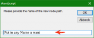
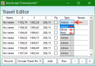
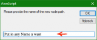
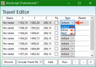

Anyone can help me to how to use the bot?
We press on enable and dont attack
Class gladiator
Ty :/
How to start the bot? :/

Re: How to start the bot? :/
How to use AionScript as Bot:
1. Download the Newest AionScript => viewforum.php?f=4 <=
2. Extract AionScript
3. Start AionScript.exe as Admin.
4. Then select OfficialGrinderFramework

5. Create your Waypoints (Rightclick in the empty window under the OfficialGrinderFramework line)

6. A window will appear requiring you to enter the walk path name.

7. Go to your grinding spot and Press the Record button. Switch back to Your Game Window and create a grind path by moving around. Make an easy/safe way for your professional helper (Bot). Dont run through hundreds of mobs, jumping over obstacles, etc or your Bot will get maybe stuck. When done press Stop.

08. You see a list of rows added.

Each row represents a walk path node. Depending on the script, the types may have different functions. Generally the functions can be described as
• Action, this is the node where you will be doing things.
• Rest, make sure your bots rest.
• Move, this will make the script immediately continue to the next node.
9. Save and close the walk path.
10. Go in AS\Scripting\OfficialGrinderFramework\Classes Folder and edit your Gladiator.lua file and save it.
or use this one viewtopic.php?f=11&t=63 (Check Skill Name)
11. Press the Enable button.
I hope this can help u .
.
In case I forgot something, I'm sorry it`s late
 .
.
1. Download the Newest AionScript => viewforum.php?f=4 <=
2. Extract AionScript
3. Start AionScript.exe as Admin.
4. Then select OfficialGrinderFramework
5. Create your Waypoints (Rightclick in the empty window under the OfficialGrinderFramework line)
6. A window will appear requiring you to enter the walk path name.

7. Go to your grinding spot and Press the Record button. Switch back to Your Game Window and create a grind path by moving around. Make an easy/safe way for your professional helper (Bot). Dont run through hundreds of mobs, jumping over obstacles, etc or your Bot will get maybe stuck. When done press Stop.
08. You see a list of rows added.

Each row represents a walk path node. Depending on the script, the types may have different functions. Generally the functions can be described as
• Action, this is the node where you will be doing things.
• Rest, make sure your bots rest.
• Move, this will make the script immediately continue to the next node.
9. Save and close the walk path.
10. Go in AS\Scripting\OfficialGrinderFramework\Classes Folder and edit your Gladiator.lua file and save it.
or use this one viewtopic.php?f=11&t=63 (Check Skill Name)
11. Press the Enable button.
I hope this can help u
In case I forgot something, I'm sorry it`s late

Re: How to start the bot? :/
http://rgho.st/6glfKnCLC http://rgho.st/8nHcYTmvR The question is what is wrong I did? Why is not the active window? Or it is necessary to install still that that? http://rgho.st/6MsXM6dpR i play on eu. win 8.1 64 bit
Who is online
Users browsing this forum: No registered users and 0 guests